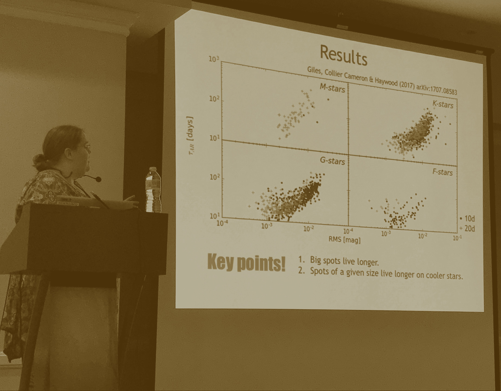

    <!--background color-->
    <script type="text/javascript">
        document.write ('<body style="background: Gainsboro; background-attachment: fixed;">')
    </script>

    <section id="conference" class="black-frame about about-container about-container-top">
      <h1>{{ page.title }}</h1>

      <div class="icon-about">
        
      </div>

      <h2 class="second">Theme</h2>

      <p>The confounding effect of starspots on fundamental stellar properties</p>

      <h2 class="third">Mission</h2>

      <p>Discuss what we have learned about the detection, characterization, and broader implications of starspots</p>

      <h2 class="second">Vision</h2>

      <p>The regions of intense magnetic activity and suppressed convection known as starspots are a ubiquitous feature on the surface of cool stars. Sometimes maligned as a contaminating nuisance for spectral typing and planet finding, starspots are instead an important and fascinating physical phenomenon deserving of intensive study in their own right. They represent a fundamental component of the surface layers of magnetically-active and rapidly-rotating stars, which cannot be neglected. </p>

      <h2 class="first">Objectives</h2>

      <p>Several talks will cover mechanics, results, and future prospects for the dozen or so starspot detection techniques currently in use by the community. We will highlight new research on the properties of spots themselves, including surface distributions, dependence on age and evolutionary state, and spot lifetimes.

      The remaining talks will discuss new and exciting astrophysical results pertaining to starspots. These include the direct influence of spots on stellar structure and evolution, the influence on inferred stellar properties such as mass and age, and more.</p>
    </section>

    <section id="fourth" class="black-frame about about-container">
      <h1>Join us at Cool Stars 20 in Boston</h1>

      <p>More</p>
    </section>

    <section id="fifth" class="black-frame about about-container about-container-bottom">
      <h1>About</h1>

      <p>Info</p>
    </section>
